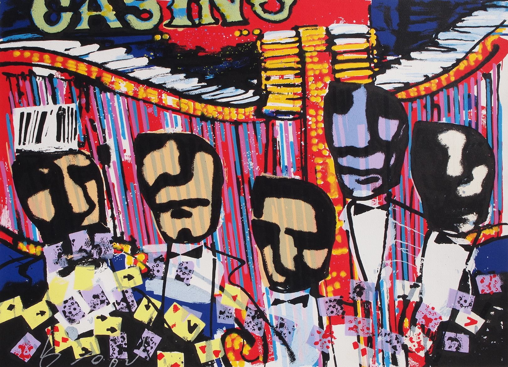
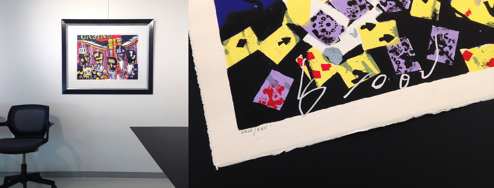
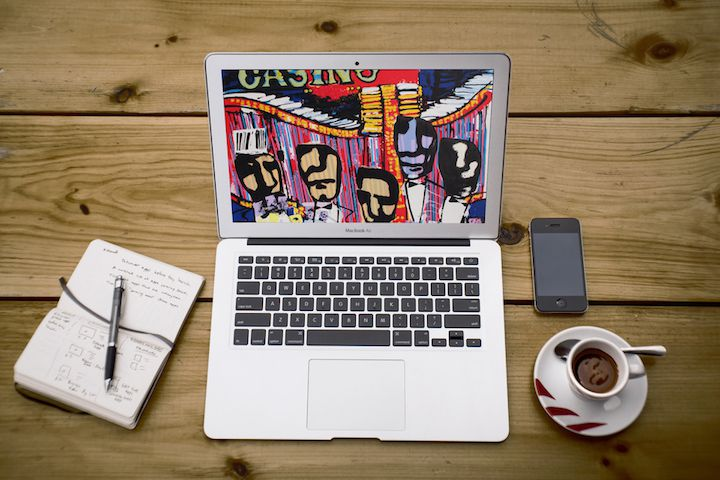
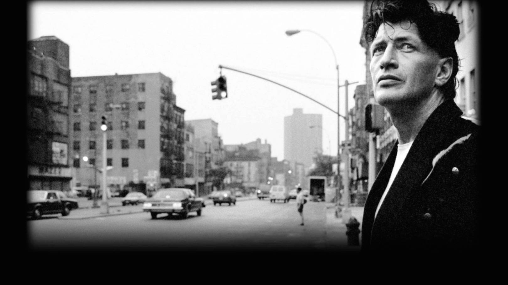

Art Depot verloot deze 'Casino' zeefdruk!

A Hand pulled, signed and numbered screen print on thick fine art paper. With certificate of origin.
Neem deel aan de wedstrijd door je gegevens in te vullen in het kader.
- afmeting: 60x80cm
- genummerd
- gesigneerd door Herman Brood
- op zwaar papier
- waarde: 900 Euro

Regels | Rules
Competition open for everybody to participate
Deelname is open voor iedereen, en kan maar 1 keer per persoon. Na verificatie selecteert de computer anoniem en willekeurig 1 winnaar. Die wordt gecontacteerd per email voor het einde van de tentoonstelling, en dient het kunstwerk persoonlijk af te halen in de galerie.
Bonus
Indien iemand van je vrienden deelneemt (gebruikmakend van je persoonlijke link) krijg je van ons een digitale reproductie van het Herman Brood schilderij 'Casino', die kan je als achtergrond instellen op je tv, pc, laptop, tablet, smartphone,...

Expo: Sex, drugs & rock 'n' roll

HERMAN BROOD
Sex, drugs & rock 'n' roll
09/01/2015 > 15/03/2015
weekends 14 >18h
free expo & art-sale
Galerie Art Depot stelt een 60-tal authentieke schilderijen, zeefdrukken, prints en tekeningen van Herman tentoon.
Open op vrijdag, zaterdag en zondag van 14 tot 18 uur, of na afspraak:
+32 (0)486 65 56 85
Dorp 31
2820 Bonheiden
Belgium
google maps
apple maps
Herman Brood (1946 - 2001)
Herman Brood was een legendarische zanger, kunstschilder, pianist, acteur en auteur. Hij was de Nederlandse belichaming van het hedonistische credo Sex, drugs & rock 'n' roll. Een geliefd volksfiguur in zijn thuisland, insider in de Amerikaanse muziekscene, en invloedrijk levenskunstenaar van wereldklasse.
Onderstaande reportage (van onze vorige tentoonstelling) neemt je in enkele minuten mee in zijn wereld, en toont wat je van de tentoonstelling mag verwachten.
Art Depot Gallery
over 300 artworks in stock
Galerie Art Depot stelt sinds 1997 hedendaagse kunst tentoon. Er zijn steeds meer dan 300 kunstwerken van verschillende kunstenaars te zien en te koop, in de galerie, en op deze website.
www.artdepot.be